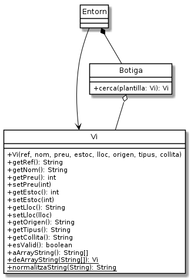

Exercici 05_05. El Vi ampliat¶
Exercici 05_05. El Vi ampliat¶
Context
Carpeta de lliurament:
05_05_vi_ampliat/Continguts relacionats: Vins complets
Com lliurar-lo: instruccions
[✓] Exercici amb autoavaluació
Enunciat
Després de la reunió, hem trobat què necessitem gestionar les següents característiques dels vins:
ref: la referència del vi dins la botiga
Segons ens explica la Sra. Estrella, la referència és única per cada vi. Ella té una codificació particular que forma amb part del nom del vi, l’anyada (o collita) i un valor seqüencial. Per exemple
"ROURABLA20200232". De moment ens ha dit que no ens hem de preocupar gaire de com està format. La impressió és que donar-los nom és una tasca que li agrada força i no ens la voldrà fer automatitzar de moment.nom: el nom del vi (com fins ara)
preu: el preu del vi (com fins ara)
estoc: la quantitat disponible del vi (com fins ara)
lloc: la localització del vi dins el celler (nou)
La manera de codificar la localització de les ampolles és, a l’igual que passava amb la referència, un misteri. Ens trobem codis tan curiosos com ara
"P02E03N55D". No ens sorprèn que la nostra clienta comenci a tenir dificultats per recordar on deixa les ampolles! El seu magatzem és un intricat laberint ple de passadissos, estants i nivells. La Sra. Estrella els assigna un lloc a les ampolles a mida que li arriben, normalment allà on hi trobava espai, i la seva antiga memòria prodigiosa li permetia recordar on es trobaven. Ara el Tomet serà l’encarregat de registrar a l’aplicació que estem fent el lloc on deixa els diferents vins, de manera que una consulta ràpida a l’aplicació permetrà la Sra. Estrella localitzar cada ampolla.origen: la denominació d’origen del vi, també D. O.. (nou)
tipus: el tipus de vi (nou)
collita: l’any de collita del vi (nou)
Tot i sent un any, la codificarem com un String ja que no sembla que hàgim d’aprofitar les propietats d’un enter i preveiem que ens resultarà més fàcil de programar d’aquesta manera.
N’hi moltes més característiques, algunes tan importants com el celler o la varietat, però la nostra clienta ha prioritzat temps a completesa. «Si ho continueu fent tan bé», ens diu amb la seva rialleta astuta, la Sra. Estrella, «ja me les afegireu més endavant».
Hem recopilat alguns exemples de vins per tenir dades reals per les proves:
ref |
nom |
preu |
estoc |
lloc |
origen |
tipus |
collita |
|---|---|---|---|---|---|---|---|
LLUMALBA20200001 |
Llum d’Alba Blanc |
1750 |
12 |
P02E03N55D |
Priorat |
blanc |
2020 |
CARPATHI20180021 |
Carpathia Negre |
3450 |
6 |
P23E01N43D |
Montsant |
negre |
2018 |
MATISNEG20190011 |
Matís Negre |
1325 |
12 |
P20E01N12E |
Pla del Bages |
negre |
2019 |
SAOROSAT20180001 |
Saó Rosat |
1040 |
24 |
P02E45N55D |
Costers del Segre |
negre |
2018 |
ROURABLA20200232 |
Roura blanc |
1012 |
42 |
P21E45N55E |
Alella |
blanc |
2020 |
ROURABLA20200201 |
Roura blanc |
906 |
3 |
P21E45N55E |
Alella |
blanc |
2018 |
CERCIUMX20170002 |
Cercium |
565 |
30 |
P23E01N55D |
Empordà |
negre |
2017 |
MASIASER20200001 |
Masia Serra |
1350 |
12 |
P02E02N55E |
Empordà |
negre |
2020 |
El diagrama UML tindrà ara el següent aspecte:

public Vi(String ref, String nom,
int preu, int estoc,
String lloc, String origen,
String tipus, String collita) { /* … */ }
Avís
ara que el nombre d’atributs s’ha incrementat tant, apareix un perill a l’hora d’ordenar-los. Per evitar-te problemes amb les proves, et recomano que segueixis l’ordre indicat a la signatura del constructor anterior.
Així, només tindrem les propietats preu i estoc com a valors
enters. Com fins ara, codificarem els valors no vàlids (els negatius) com
-1.
La resta seran codificats amb String i, per ser considerats vàlids, no
poden ser mai inicialitzats com null, ni buits, ni estar formats només
per espais.
Els constructors de Vi¶
A la versió anterior disposàvem de dos constructors. Un d’ells ens permetia no haver d’especificar l’estoc. Malgrat aquella semblava una bona decisió, ara que tenim tantes propietats a inicialitzar, la complexitat d’oferir constructors parcials es fa inabordable. Així que deixarem un únic constructor amb tots els atributs.
Normalització dels valors de tipus String¶
El mètode Vi.normalitzaNom() ara no ens acaba de anar bé tal i com el
teníem. En concret, ja no només normalitzarà noms sinó també d’altres
Strings. Per aquesta raó ens caldrà fer els següents canvis:
En comptes de
normalitzaNom(), anomenarem el mètode comnormalitzaString().Donat que una instància de
Vies pot fer servir com a plantilla, ara els atributs de tipus Strings han de poder acceptar el valornullo la cadena buida que simbolitzarà qualsevol valor. El nou mètodenormalitzaString()acceptarà així el valornulli també la cadena buida o només formada per espais en blanc. Tots tres casos es retornaran com anull.El missatge de valor per defecte (
NOM NO VÀLID!) deixa de tenir sentit. Amb aquesta versió, els noms no vàlids també es codificaran ambnull.
Hem discutit força respecte si fer servir null o la cadena buida
per marcar si un atribut era o no vàlid. Al final ens hem decantat per
null perquè no crea instàncies innecessàries.
La funció esValid() haurà de tenir en compte tots aquests canvis.
Persistència i toString()¶
Ens tocarà també modificar els mètodes de Vi, deArrayString() i
aArrayString() de manera que es considerin totes les noves
característiques d’un vi.
En el cas de deArrayString(), quan l’entrada no disposi exactament del
nombre d’elements necessaris per crear un vi, o bé algun d’aquests
elements no sigui vàlid per l’atribut que li correspon, retornarà null.
Tot i que podríem escollir qualsevol ordre per les propietats, les guardarem de la següent manera per poder passar les proves que hem preparat: referència, nom, tipus, preu, collita, estoc, denominació d’origen i lloc.
També ens caldrà modificar toString() si volem continuar utilitzant-lo
per mostrar totes les propietats del vi.
La classe Botiga¶
La classe Botiga també es veurà transformada:
l’antic mètode
cerca(String)que abans cercava per nom del vi, ara cercarà per referència. El mateix passa amb el mètodeelimina(String)que mirarà d’eliminar el vi amb la referència indicada.apareix un nou mètode
cerca(Vi)que rep una instància deVi, pel que probablementesValid()retornaràfalse. Aquesta instància ens servirà de plantilla per poder trobar el vi que ens interessa. En cas que no trobi cap vi que coincideixi amb la plantilla, retornarànull. Altrament retornarà el primer que trobi que coincideixi.
Per permetre molta flexibilitat a l’hora de cercar un vi, se’ns ha ocorregut que la millor manera és passar-li al cercador una plantilla de vi amb les especificacions d’allò que cerquem. I què millor plantilla que un altre vi?
La idea bàsica és que construirem una instància de Vi que tindrà
especificats els valors de les característiques del vi que cerquem, mentre
que si una característica no ens importa, la deixarem amb un valor no
vàlid.
Per exemple, si volem cercar per nom com fins ara, només haurem de definir el nom a la plantilla i la resta de característiques les posarem amb un valor que indiqui d’alguna manera que no està especificat.
En concret:
els valors de tipus string que no ens interessi especificar els marcarem amb
null.el preu de la plantilla serà considerat com a preu màxim. Si el deixem com a -1 es considerarà qualsevol preu, fins i tot 0. Altrament, es considerarà només els vins que tinguin un preu menor o igual a l’indicat.
l’estoc de la plantilla es considerarà com a estoc mínim. Si el deixem com a -1 es considerarà qualsevol estoc, fins i tot 0. Altrament, només es considerarà vins que tinguin com a mínim l’estoc indicat.
en cas que un valor de tipus String no sigui buit a la plantilla, haurà de coincidir amb el valor del vi a seleccionar. No distingirà majúscules i minúscules. La comparació es realitzarà amb Strings normalitzats.
En cas que hi hagi més d’un vi que correspongui a la cerca, el cercador retornarà el primer que trobi.
Sabem que cercar alguns valors pot arribar a ser molt incòmode i que la normalització del text no és suficient. De moment, però, mantindrem aquesta simplificació i més endavant, si cal, mirarem d’arreglar-ho.
Entorn: afegir, modificar, eliminar¶
Tot i que li ha agradat molt a la Sra. Estrella, les opcions d’afegir,
modificar i eliminar des de l’entorn, considera que no són tan importants
com la de cerca. Se n’ha adonat que si edita el fitxer botiga.csv pot
fer les modificacions que li vinguin de gust i, fins i tot, vincular-ho
amb el seu full de càlcul. S’estima més que dediquem ara el temps a la
cerca, i que ja més endavant en parlarem si li calen aquestes opcions.
Així que, de moment, farem que en seleccionar les opcions d’afegir,
modificar i eliminar de Entorn, aquest ens respongui amb el missatge
Comanda temporalment no disponible.
Una altra cosa que ens suposa aquest canvi és que ja no caldrà que
Entorn guardi les dades dins de botiga.csv en finalitzar, ja que
aquestes no seran modificades des del programa.
Nota: malgrat no l’estem fent servir per la versió de l’entorn actual,
el mètode Botiga.elimina(String) sí que el mantenim ja que la
modificació és molt petita.
Entorn: cercar¶
En el cas de l’opció de cerca des de Entorn, l’aproximació que prenem
és la següent:
En rebre la comanda "cerca" l’entorn començarà demanant la referència
del vi a cercar.
Si la usuària introdueix un valor, farà servir el mètode
Botiga.cerca(String) i mostrarà el resultat.
En cas que la usuària no especifiqui cap valor per la referència, es procedirà a demanar valors per cada propietat. En cas que s’introdueixi una línia buida, es suposarà que no es vol especificar la propietat. En cas que s’introdueixi com a valor l’exclamació, s’entendrà que ja no es vol especificar cap altra propietat. Així, la resta de propietats quedaran inicialitzades als valors no especificats explicats abans.
Ara només es podrà cancel·lar la cerca si s’introdueix una exclamació a la referència. Per la resta de propietats, l’exclamació només indicarà que ja no es volen especificar més valors per la cerca.
Amb les dades introduïdes es construeix una instància de Vi que serà
utilitzada com a plantilla per la cerca.
En cas que no s’especifiqui cap valor a la plantilla, és clar, s’obtindrà el primer vi que es trobi.
Per exemple, si es vol trobar el vi amb una certa referència, s’introduirà així:
botiga> cerca
ref> rourabla20200232
Trobat:
Ref: ROURABLA20200232
Nom: Roura blanc
Preu: 1012
Estoc: 42
Lloc: P21E45N55E
D.O.: Alella
Tipus: blanc
Collita: 2020
botiga>
En canvi, si volem indicar només el nom i l’origen, farem
botiga> cerca
ref>
nom> roura blanc
preu max.>
estoc min.>
lloc>
D.O.> alella
tipus> !
Trobat:
Ref: ROURABLA20200232
Nom: Roura blanc
Preu: 1012
Estoc: 42
Lloc: P21E45N55E
D.O.: Alella
Tipus: blanc
Collita: 2020
botiga>
No està malament, oi? Doncs a treballar!
Pistes¶
Els canvis requerits per aquest exercici no són complicats de codificar.
La dificultat rau en la quantitat de petits canvis. Això farà que intentar
realitzar-ho seguint els missatges d’error generats per prgtest pot
arribar a resultar dur. Per aquesta raó, abans de començar a implementar
els canvis, fes una llista de tots els punts que han de canviar.
La llista podria començar amb:
afegir a
Viels nous atributsmodificar constructor de
Vi(deixar només un)modificar el mètode
Vi.esValid()perquè funcioni amb els nous atributs…
A mida que vagis finalitzant un apartat, el pots anar tatxant de la llista. Assegura’t que et permets gaudir de la sensació d’anar eliminant elements!
Una empenteta si estàs tenint problemes amb com cercar els vins:
1 2 3 4 5 6 7 8 9 10 11 | public Vi cerca(Vi plantilla) {
for (Vi vi: vins) {
if (vi == null) continue;
if (! plantilla.getRef().isEmpty() && ! plantilla.getRef().equalsIgnoreCase(vi.getRef())) continue;
if (! plantilla.getNom().isEmpty() && ! plantilla.getNom().equalsIgnoreCase(vi.getNom())) continue;
if (plantilla.getPreu() >= 0 && plantilla.getPreu() <= vi.getPreu()) continue;
// No, no t'he donat tot el codi ;)
return vi;
}
return null;
}
|